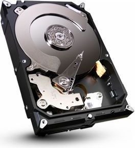

ST1000DM003 - Dysk dysponuje ogólną pojemnością wynoszącą 1 TB, która gwarantuje bezproblemową instalację systemu operacyjną oraz wszystkich najnowszych aktualizacji. Przestrzeń dyskowa może zostać także w łatwy sposób podzielona na partycje, dzięki czemu użytkownik ma możliwość sprawnego zarządzania plikami. Dysk twardy 1 TB okaże się wystarczający do codziennego użytku domowego, sprawdzi się również w biurze, w komputerze gamingowym, a także w konfiguracjach wykorzystywanych do obsługi programów specjalistycznych.
Format dysku: 3.5"
Pamięć podręczna: 64 MB
Pojemność dysku: 1 TB
Prędkość obrotowa [obr./min.]: 7200
Rodzaj dysku: HDD
